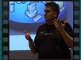
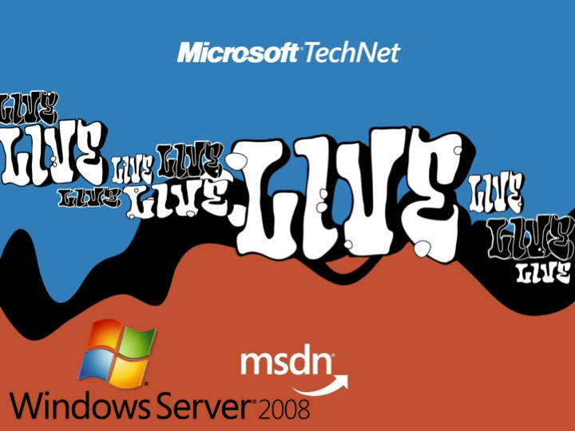
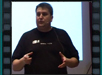
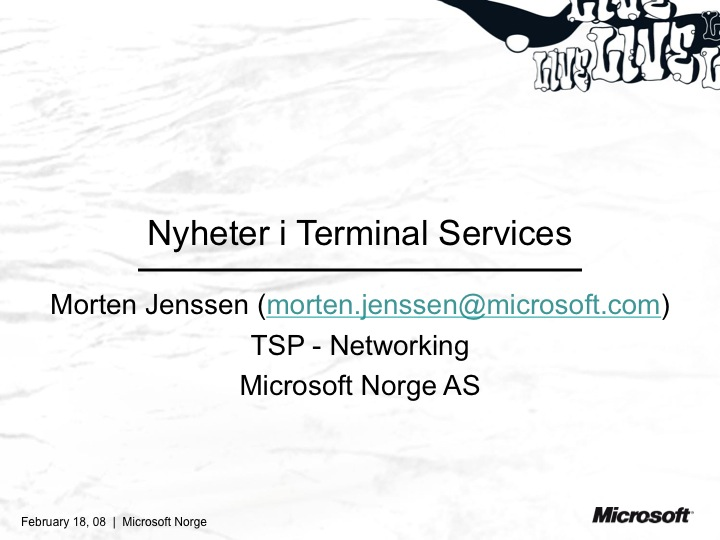
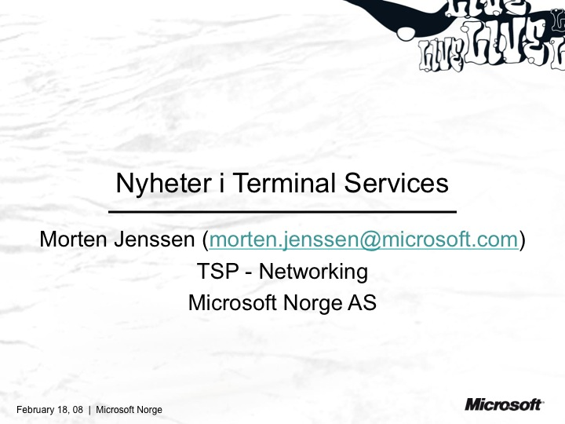
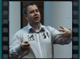

Windows Server 2008: Server Virtualization Deep Dive


Speaker(s): Olav Tvedt
Windows Server 2008: Network Access Protection

 Speaker(s): Olav Tvedt
Speaker(s): Olav Tvedt
Windows Server 2008: Terminal Services
 
Speaker(s): Morten Jenssen

Speaker(s): Morten Jenssen
Windows Server 2008: Remote Management & Server Core

 Speaker(s): Ragnar Harper
Speaker(s): Ragnar Harper